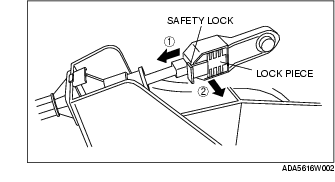

Selector cable adjustment
1. Remove the center console.
2. Shift the selector lever to P position.
3. Unlock the lock piece of the selector cable (selector lever side) in the order shown in the figure.

4. Verify that the manual shaft is in P position.
5. Lock the lock piece of the selector cable (selector lever side) in the order shown in the figure.
6. Install the center console.
7. Shift the selector lever from P position to M (Sport AT), L (4AT) range, and make sure that there are no other components in that area to interfere with the lever.